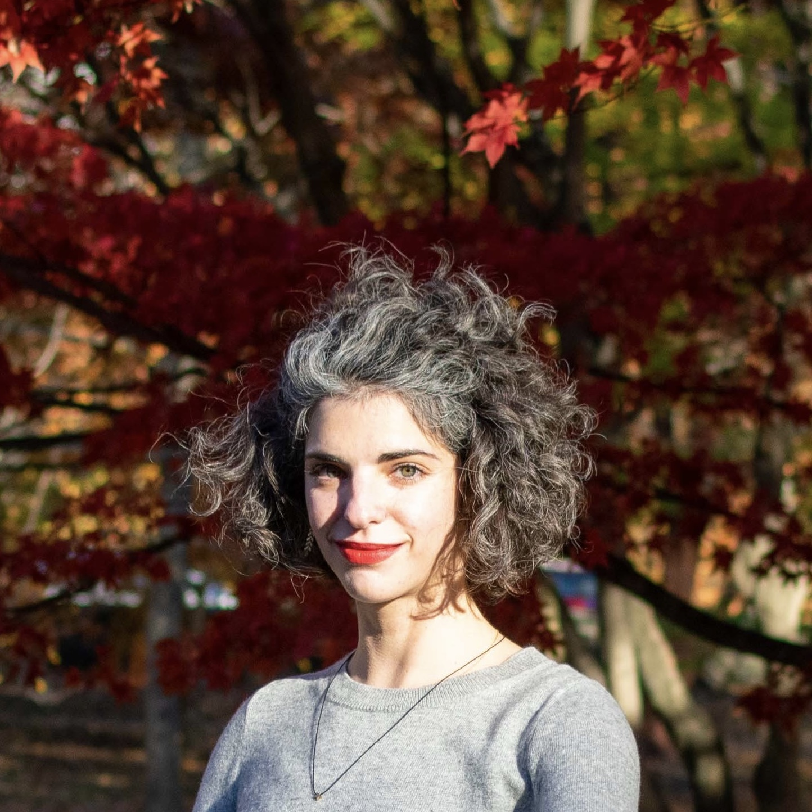

About me
I am a postdoctoral researcher at Northeastern University working with Prof. Amal Ahmed on language interoperability. Before that, I was a PhD student at Princeton University, working with Prof. Andrew Appel on verified compilation of functional languages.
I am a contributor in the CertiCoq project. I occasionally contribute to QuickChick and F*.
My CV can be found here.
News
- I defended my PhD Thesis on October 30th!
- I received a CI Fellowship to work with Prof. Amal Ahmed on language interoperability on top of WebAssembly.
- I am honored to receive a Siebel Scholar Award after being nominated by the Princeton CS department.
- Excited to be participating in the panel Research in Functional Programming at PLMW@ICFP’19.
- I will be participating in the Dagstuhl Seminar Secure Compilation in May 2018.
- I was interviewed for People of Programming Languages@POPL’18.
Talks
- [November 24th 2020] VCompositional Optimizations for CertiCoq, POPV Seminar @ Boston University
- [October 30th 2020] Verified Optimizations for Functional Languages, PhD Thesis Defense, Princeton University
- [October 20th 2020] Invited lecture on CertiCoq @ Advanced Coq Programming, Saarland University
- [December 2nd 2019] CertiCoq: Current and Future Directions, NU PRL @ Northeastern University
- [August 19th 2019] Closure Conversion is Safe for Space, ICFP 2019
- [June 2nd 2019] Closure Conversion is Safe for Space, DeepSpec @ PLDI 2019
- [Sept 7th 2018] Layered DSLs for Verified Cryptography, End-of-internship talk, MSR Redmond
- [Jan 12th 2018] Generating Good Generators for Inductive Relations, POPL 2018
Publications
Zoe Paraskevopoulou, and Andrew Appel. Closure Conversion is Safe for Space. ACM SIGPLAN International Conference on Functional Programming (ICFP), August 2019. paper, slides, Coq development
Guido Martínez, Danel Ahman, Victor Dumitrescu, Nick Giannarakis, Chris Hawblitzel, Catalin Hritcu, Monal Narasimhamurthy, Zoe Paraskevopoulou, Clément Pit-Claudel, Jonathan Protzenko, Tahina Ramananandro, Aseem Rastogi, Nikhil Swamy. Meta-F* : Proof Automation with SMT, Tactics, and Metaprograms. ESOP 2019. paper
Leonidas Lampropoulos, Zoe Paraskevopoulou, and Benjamin Pierce. Generating Good Generators for Inductive Relations. In ACM SIGPLAN Symposium on Principles of Programming Languages (POPL), 2018. paper, slides
Ezgi Çiçek, Zoe Paraskevopoulou, and Deepak Garg. A type theory for incremental computational complexity with control flow changes. ACM SIGPLAN International Conference on Functional Programming (ICFP), September 2016. paper, appendix with proofs
Zoe Paraskevopoulou, Cătălin Hriţcu, Maxime Dénès, Leonidas Lampropoulos, and Benjamin C. Pierce. Foundational Property-Based Testing. In 6th International Conference on Interactive Theorem Proving (ITP), August 2015. paper, slides
Theses
PhD Thesis
Verified Optimizations for Functional Languages
Thesis
Master’s Thesis
Self-Adjusting Computation for CostIt, Supervised by Deepak Garg
Thesis, Slides
Diploma Thesis
A Coq Framework For Verified Property-Based Testing, Supervised by
Cătălin Hriţcu
Thesis,
Slides
Workshop Papers
ML as a Tactic Language, Again. Guido Martínez, Danel Ahman, Victor Dumitrescu, Nick Giannarakis, Chris Hawblitzel, Cătălin Hriţcu, Monal Narasimhamurthy, Zoe Paraskevopoulou, Clément Pit-Claudel, Jonathan Protzenko, Tahina Ramananandro, Aseem Rastogi, and Nikhil Swamy. ML 2018.
CertiCoq: A verified compiler for Coq (Extended Abstract). Abhishek Anand, Andrew Appel, Greg Morrisett, Zoe Paraskevopoulou, Randy Pollack, Olivier Savary Belanger, Matthieu Sozeau, and Matthew Weaver. CoqPL 2017.
Making our Own Luck: A Language for Random Generators (Extended Abstract). Leonidas Lampropoulos, Benjamin C. Pierce, Cătălin Hriţcu, John Hughes, Zoe Paraskevopoulou and Li-yao Xia. PPS 2016
A Coq Framework For Verified Property-Based Testing (Extended Abstract). Zoe Paraskevopoulou, Cătălin Hriţcu, Maxime Dénès, Leonidas Lampropoulos and Benjamin C. Pierce. CoqPL 2015.
QuickChick: Property-Based Testing for Coq. Maxime Dénès, Cătălin Hriţcu, Leonidas Lampropoulos, Zoe Paraskevopoulou and Benjamin C. Pierce. The 6th Coq Workshop. July 2014.
Students
Anvay Grover, Senior Thesis, Fall 2019/Spring 2020
Implementation and Verification of the CPS Transformation of the CertiCoq Compiler, co-advised with Prof. Andrew Appel
Katja Vassilev, Senior Thesis, Fall 2018/Spring 2019
Implementation and Verification of the Dead Parameter Elimination Optimization of the CertiCoq Compiler, co-advised with Prof. Andrew Appel
Internships
- Facebook, June - August 2019
Provided a Rust backend for Fiat-crypto - Microsoft Research, Redmond, June - August 2018
Excited to continue working on F*! - Microsoft Research, Redmond, June - August 2017
Excited to be working with Jonathan Protzenko and Nikhil Swamy on F* native tactic compilation! - Max Planck Institute of Software Systems, March - August 2015
Advised by Deepak Garg and worked on incremental computation for CostIt! - INRIA Paris, April - September 2014
Advised by Cătălin Hriţcu and had the opportunity to start working on QuickChick!
Service
- Workshops co-chair, ICFP 2021
- Program Committee, PriSC 2021
- Program Committee, TFP 2020
- Program Committee, ML 2019
- External Review Committee, ICFP 2019
- Program Committee, TyDe 2018
- Program Committee, OCaml 2017
- Artifact Evaluation Committee, POPL 2017